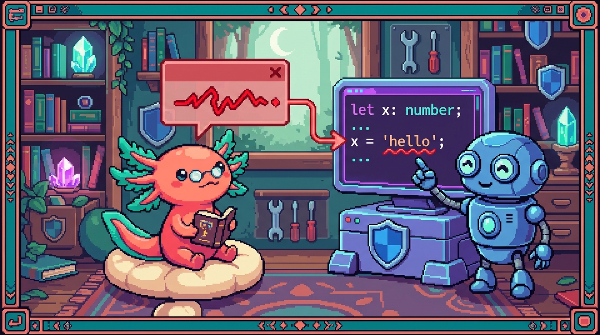

Capítulo 13 — Leer y resolver errores de tipos

Hasta ahora has escrito tipos: interfaces, uniones, genéricos, props de React. Pero seamos honestos sobre cómo se siente programar de verdad: el 80% del tiempo no estás escribiendo tipos nuevos, estás leyendo errores rojos que TypeScript te subraya y preguntándote "¿y ahora qué quiere de mí?". Buenas noticias de parte de Bit, tu ajolote: esos errores no son tu enemigo. Son un revisor obsesivo que leyó todo tu código antes de que se ejecute y te avisa, antes de que la app falle frente a un usuario, que algo no encaja. Este capítulo te enseña a leer un error de TypeScript como quien lee un mapa: de dónde sale, qué te está diciendo y cómo arreglarlo de verdad (no taparlo). Vamos a usar los errores reales que aparecen al trabajar en RachaSimple (la app de hábitos) y en Faro (tu organizador de proyectos). Y recuerda lo de siempre: TypeScript es JavaScript con tipos. El error no cambia tu código que corre; cambia lo que TypeScript te deja escribir.
1. Anatomía de un error de TypeScript
Cuando TypeScript no está contento, te subraya un trozo de código con una línea ondulada roja y, al
poner el cursor encima (o en la pestaña "Problems" de VS Code, o en la terminal cuando corres
npm run build), te muestra un mensaje. Ese mensaje siempre tiene la misma forma. Mira uno real que
aparece en Faro si te equivocas:
// project.description es de tipo `string | null`
const inicial = project.description.trim();
// ~~~~ 'project.description' is possibly 'null'.
// ts(18047)
Vamos a despiezar lo que ves:
- El lugar subrayado (
project.description): el trozo exacto donde TS detectó el problema. - El mensaje ("'project.description' is possibly 'null'"): la explicación en inglés.
- El número (
ts(18047)): el código del error. No tienes que memorizarlos, pero te sirve para buscar en Google "ts 18047" y encontrar gente con tu mismo problema.
🟦 ¿Qué significa? — Error de tipos (type error)
Un aviso que da TypeScript cuando el tipo de un valor no coincide con lo que tu código intenta hacer con él. No es un error que ocurre al ejecutar; es un error que TS detecta antes, leyendo los tipos. Para qué sirve: atrapar bugs (como acceder a algo que podría ser
null) en tu editor, mucho antes de que se rompa en producción. Dónde se usa: en Faro,npm run buildfalla si hay un solo error de tipos, así que arreglarlos es obligatorio antes de fusionar un PR.🟦 ¿Qué significa? — Compilador (compiler)
El programa de TypeScript (
tsc) que lee tu código.ts/.tsx, revisa todos los tipos y traduce a JavaScript normal. Para qué sirve: es quien "se queja" con los errores de tipos. Dónde se usa: cuando corresnpm run builden Faro otsc --noEmiten RachaSimple, ese es el compilador revisando todo tu proyecto de una sola pasada.💡 Tip
El número de error (
ts(2339),ts(18047), etc.) es tu mejor amigo para buscar ayuda. Copia el mensaje completo en inglés en el buscador; casi siempre alguien ya tuvo exactamente ese error.⚠️ Cuidado
Un error de tipos no significa que tu app esté rota ahora mismo. A veces el código hasta funciona en ejecución. Pero TS te avisa porque podría romperse con ciertos datos (un
nullque aún no has visto). Ignorarlo es jugar a la lotería con tus usuarios.
2. Leer el error de adentro hacia afuera
Los mensajes de TypeScript pueden parecer un muro de texto, sobre todo con tipos complicados. El truco profesional es leerlos de adentro hacia afuera: busca primero el dato más concreto (el nombre de la variable, el tipo más pequeño) y desde ahí entiende el resto.
Imagina que en RachaSimple intentas pasarle a HabitCard un objeto equivocado. El componente espera
esto (es su código real):
interface HabitCardProps {
habit: Habit;
todayCheckin: DailyCheckin | undefined;
}
Si por error le pasas un texto donde va habit, TS dice algo así:
<HabitCard habit={"correr"} todayCheckin={undefined} />
// ~~~~~
// Type 'string' is not assignable to type 'Habit'. ts(2322)
Léelo de adentro hacia afuera:
- Lo más concreto:
'string'→ lo que TÚ diste (un texto). - Con qué se compara:
type 'Habit'→ lo que el componente ESPERA. - El verbo clave:
is not assignable to→ "no se puede meter esto en aquello".
Traducido a humano: "me diste un texto, pero habit necesita un objeto Habit." Casi todos los
errores de "tipos incompatibles" tienen esta estructura: Type A is not assignable to type B,
donde A es lo que pusiste y B es lo que se esperaba.
🟦 ¿Qué significa? — "is not assignable to" (no asignable a)
La frase clave de los errores de incompatibilidad. Significa "el valor de la izquierda no cabe en el hueco de la derecha porque sus tipos no encajan". Para qué sirve: te dice exactamente las dos piezas que no coinciden. Dónde se usa: sale en RachaSimple cada vez que pasas una prop con el tipo equivocado a un componente como
HabitCardoMetricCard.🟦 ¿Qué significa? — Prop
Un valor que le pasas a un componente de React desde fuera, como un argumento de función pero en JSX. Para qué sirve: configurar el componente (qué hábito mostrar, qué color usar). Dónde se usa:
habitytodayCheckinson las props deHabitCarden RachaSimple.💡 Tip
Cuando el error sea largo, lee solo la última línea primero. Suele tener el resumen ("Type 'X' is not assignable to type 'Y'"). El resto del muro es TS explicándote por qué, campo por campo. Si la última línea ya te basta, no leas lo demás.
3. Error común: "el objeto posiblemente es null o undefined"
Este es, de lejos, el error que más vas a ver. Aparece porque muchos de tus datos tienen tipos como
string | null o Algo | undefined. Mira los tipos reales de Faro:
export interface Project {
name: string;
description: string | null; // puede ser texto O null
ai_summary: string | null; // puede ser texto O null
progress_pct: number | null; // puede ser número O null
// ...
}
El | null no es un descuido: significa "este proyecto todavía no tiene descripción porque
nadie ha disparado el análisis con IA". Entonces, si haces esto:
const resumen = project.ai_summary.slice(0, 100);
// ~~~~~ 'project.ai_summary' is possibly 'null'. ts(18047)
TS te frena porque si ai_summary fuera null, llamar a .slice() reventaría en ejecución con el
clásico "Cannot read properties of null". TS te está salvando de un bug real.
🟦 ¿Qué significa? — null y undefined
Dos formas de decir "aquí no hay valor".
nullsuele significar "vacío a propósito" (un proyecto sin descripción aún).undefinedsuele significar "esto no existe / no se pasó". Para qué sirven: representar la ausencia de un dato. Dónde se usan: en Farodescription: string | nullmarca un campo que puede venir vacío de la base de datos; en RachaSimpletodayCheckin: DailyCheckin | undefinedmarca "puede que hoy todavía no haya check-in".🟦 ¿Qué significa? — Estrechar el tipo (narrowing)
Reducir un tipo amplio (
string | null) a uno más concreto (string) demostrándole a TS, con unifo similar, que en ese punto el valor ya no puede sernull. Para qué sirve: después de estrechar, TS te deja usar el valor sin quejarse. Dónde se usa: lo viste en el Capítulo 06; es la forma correcta de resolver los errores de "possibly null".
La forma más limpia de resolverlo es estrechar con un if:
if (project.ai_summary !== null) {
// Aquí dentro, TS YA SABE que ai_summary es string. Sin error.
const resumen = project.ai_summary.slice(0, 100);
}
🔎 En tu código
En Faro, el componente
ProjectCardrecibe unProjectcuyodescriptionesstring | null. Por eso verás patrones comoproject.description ?? "Sin descripción aún": es la manera de dar un texto de respaldo cuando el dato viene vacío. No es paranoia; es que la base de datos de verdad devuelvenullmientras no corras el análisis.
4. Error común: "la propiedad no existe en este tipo"
El segundo gran clásico: Property 'X' does not exist on type 'Y' (ts(2339)). Significa que estás
pidiendo un campo que ese tipo no tiene. Casi siempre es un typo o que confundiste dos tipos.
// El tipo Project tiene `progress_pct`, no `progress`
const p = project.progress;
// ~~~~~~~~ Property 'progress' does not exist on type 'Project'.
// Did you mean 'progress_pct'? ts(2339)
Fíjate en el regalo del final: "Did you mean 'progress_pct'?". TS conoce todos los campos de
Project (porque tú los declaraste en types.ts) y te sugiere el que más se parece. Nueve de cada
diez veces, ese es el arreglo.
🟦 ¿Qué significa? — Propiedad (property)
Cada uno de los campos con nombre que tiene un objeto:
name,phase,progress_pct. Para qué sirve: guardar cada pedazo de información del objeto. Dónde se usa: las propiedades deProjecten Faro y deHabitoUserProfileen RachaSimple están todas declaradas en sus archivos de tipos, y por eso TS sabe cuáles existen y cuáles no.⚠️ Cuidado
Si TS dice "Property 'foo' does not exist" y estás segurísimo de que existe, revisa que estés importando el tipo correcto. En RachaSimple es fácil confundir
HabitconNewHabit(el primero tieneid, el segundo no). El error no miente: estás mirando el tipo equivocado.💡 Tip
¿No recuerdas qué campos tiene un tipo? Escribe el objeto, pon un punto (
project.) y deja que el autocompletado de VS Code te muestre la lista completa. Esa lista sale directa de tus tipos, así que es la verdad absoluta.
5. ?. y ??: tus dos herramientas para null/undefined
Estrechar con if está bien, pero a veces es demasiado aparatoso. TypeScript (y JavaScript moderno)
te dan dos operadores cortitos que resuelven la mayoría de los casos.
El optional chaining ?.
// En RachaSimple, todayCheckin es `DailyCheckin | undefined`
const status = todayCheckin?.status;
El ?. significa: "si todayCheckin es null o undefined, no sigas; devuelve undefined. Si
no, sigue y dame .status." Es exactamente el código real de HabitCard. Sin ?., TS se quejaría
de que todayCheckin podría ser undefined.
🟦 ¿Qué significa? — Optional chaining (
?., encadenamiento opcional)Un operador que accede a una propiedad solo si el valor de antes no es
null/undefined; si lo es, frena y devuelveundefinedsin reventar. Para qué sirve: leer datos anidados que podrían faltar, sin escribirifpor todos lados. Dónde se usa:todayCheckin?.statusen elHabitCardde RachaSimple; en Faro, cosas comosnapshot?.last_commit?.message.
El nullish coalescing ??
// En Faro: si description es null, usa un texto por defecto
const texto = project.description ?? "Sin descripción todavía";
El ?? significa: "usa lo de la izquierda, a menos que sea null o undefined; en ese caso,
usa lo de la derecha." Es perfecto para valores por defecto.
🟦 ¿Qué significa? — Nullish coalescing (
??, fusión de nulos)Un operador que devuelve el valor de la izquierda salvo que sea
nulloundefined, en cuyo caso devuelve el de la derecha. Para qué sirve: dar un valor de respaldo cuando el dato falta. Dónde se usa:project.description ?? "..."en Faro para mostrar algo cuando aún no hay descripción generada.
?. y ?? se combinan de maravilla:
// "Dame el mensaje del último commit; si algo falta, di 'sin commits'."
const ultimo = snapshot?.last_commit?.message ?? "sin commits";
⚠️ Cuidado:
??NO es lo mismo que||Quizá conozcas
||del Módulo 03. La diferencia te puede morder:||reemplaza cualquier valor falsy (incluido0,""yfalse).??solo reemplazanullyundefined. En Faro,progress_pct ?? 0está bien; peroprogress_pct || 100sería un bug: si el progreso real es0, ¡||lo tomaría como falsy y lo cambiaría a 100! Para datos numéricos, casi siempre quieres??.🟦 ¿Qué significa? — Valor falsy
En JavaScript, un valor que se considera "falso" cuando se usa en una condición. Los falsy son exactamente seis:
false,0,""(texto vacío),null,undefinedyNaN. Todo lo demás es "truthy" (verdadero). Para qué sirve: entender qué reemplaza||(cualquier falsy) frente a qué reemplaza??(solonullyundefined). Dónde se usa: en Faro,progress_pctpuede ser0, que es falsy; por eso usar||ahí lo trataría como "vacío" por error y??es la opción correcta.
6. Optional chaining "tipado": qué te devuelve realmente
Un detalle que confunde a principiantes: cuando usas ?., el tipo del resultado cambia. Mira:
// status NO es CheckinStatus. Es CheckinStatus | undefined.
const status = todayCheckin?.status;
Aunque DailyCheckin.status sea de tipo CheckinStatus, al usar ?. TS le añade | undefined,
porque el ?. puede frenar y devolver undefined. Esto significa que el error de "possibly
undefined" puede mudarse una línea más abajo:
const status = todayCheckin?.status;
const etiqueta = statusLabel[status];
// ~~~~~~ 'status' is possibly 'undefined'. ts(18048)
Para resolverlo, vuelves a tus herramientas: un if, un ?? con valor por defecto, o un valor de
respaldo:
const status = todayCheckin?.status ?? "not_done";
// Ahora status es CheckinStatus a secas. Sin error.
🟦 ¿Qué significa? — Tipo unión (union type)
Un tipo que dice "esto puede ser una cosa o otra", escrito con
|. Para qué sirve: describir datos que tienen varias formas posibles. Dónde se usa:CheckinStatus | undefinedes lo que producetodayCheckin?.status; en Faro,string | nulles la unión más común enProject.🔎 En tu código
En RachaSimple verás muchos
?? valorPorDefectojusto después de un?.. No es casualidad: es el patrón estándar para "leer algo que puede faltar y quedarme con un tipo concreto al final". Primero?.para no reventar, luego??para quitar elundefined.
7. El as: el botón rojo que casi nunca debes apretar
Tarde o temprano descubrirás as, y parecerá magia: silencia errores al instante. Por eso mismo es
peligroso.
🟦 ¿Qué significa? — Aserción de tipo (
as)Una forma de decirle a TypeScript "confía en mí, este valor es de tipo X aunque tú no lo veas". Para qué sirve: forzar un tipo cuando tú sabes algo que TS no puede deducir. Dónde se usa: con mucha mesura; en RachaSimple aparece como
['habits'] as const(un uso seguro y legítimo).
El problema es que as no comprueba nada: es una promesa tuya, no una verificación. Si mientes
(aunque sea sin querer), TS te cree y el bug pasa a ejecución:
// MAL: estás obligando a TS a creerte que nunca es null.
const resumen = (project.ai_summary as string).slice(0, 100);
// Compila sin error... pero si ai_summary ES null, REVIENTA en ejecución.
Con as apagaste exactamente la alarma que existía para protegerte. La forma correcta era estrechar
con if o usar ??. Regla de Bit: si tu primer instinto al ver un error rojo es escribir as,
respira y busca el if o el ?? primero.
⚠️ Cuidado
asno convierte nada.valor as stringno transforma un número en texto; solo le tapa los ojos a TypeScript. Si el dato de verdad no es lo que dijiste, la app falla en producción sin aviso previo, que es justo lo que TypeScript intentaba evitar.
¿Cuándo SÍ es legítimo usar as?
as const, como enconst KEY = ['habits'] as constde RachaSimple: aquí no estás mintiendo, estás pidiéndole a TS que trate ese array como algo fijo e inmutable. Uso seguro.- Datos de los que TÚ eres responsable de validar, como
await request.json()en una ruta de Faro, donde el JSON entrante no tiene tipo y después de revisarlo a mano lo afirmas. Pero incluso ahí, lo ideal es validar de verdad.
💡 Tip
Una regla mental simple: usa
aspara darle forma a algo que TS no podía conocer (como un JSON externo), nunca para callar un error sobre algo que TS sí conocía (como unstring | null). En el segundo caso, el error tenía razón.
8. Errores típicos al trabajar en Faro y RachaSimple
Recopilemos los que más vas a encontrar en estos dos repos, con su arreglo correcto:
1. "is possibly 'null'" en campos de Faro. Casi cualquier campo de IA (ai_summary,
ai_description, progress_pct) es | null porque puede no estar generado todavía.
→ Arreglo: ?? valorPorDefecto o un if.
2. "is possibly 'undefined'" en check-ins de RachaSimple. todayCheckin es
DailyCheckin | undefined porque puede que hoy no haya registro.
→ Arreglo: todayCheckin?.algo y, si necesitas el valor concreto, ?? "not_done".
3. "Property 'X' does not exist". Un typo o confundir tipos parecidos (Habit vs NewHabit,
progress vs progress_pct).
→ Arreglo: lee la sugerencia "Did you mean...?" y corrige el nombre o el import.
4. "is not assignable to" al pasar props. Le diste a HabitCard o MetricCard un valor del tipo
equivocado.
→ Arreglo: mira la interfaz de props del componente y ajusta lo que pasas.
5. Pasar un id opcional a un hook. En useHabit(id: string | undefined), dentro se llama a
habitsRepo.getById(id!). Ese ! solo es seguro porque arriba hay enabled: !!id, que impide que
la consulta corra si no hay id.
→ Lección: el ! (igual que as) solo se justifica cuando una guardia cercana ya garantiza el
valor.
🟦 ¿Qué significa? — Non-null assertion (
!)Un primo de
asque afirma "esto NO es null ni undefined, créeme". Para qué sirve: quitar el| null/undefinedcuando tú sabes que ahí hay valor. Dónde se usa:getById(id!)en el hookuseHabitde RachaSimple, protegido porenabled: !!id. Igual de riesgoso queassi no hay una guardia que lo respalde.🟦 ¿Qué significa? — Hook
Una función especial de React (su nombre suele empezar por
use) que te deja "engancharte" a la lógica de React: datos, estado, efectos. Para qué sirve: reutilizar lógica con datos sin repetir código en cada componente. Dónde se usa:useHabit(id)en RachaSimple es un hook que trae un hábito por suid; lo verás a fondo en el Módulo 06, aquí solo aparece como ejemplo de dónde un!puede ser seguro.🔎 En tu código
Cuando
npm run buildfalla en Faro (la regla del proyecto es que el build debe pasar antes de fusionar), lo más probable es que sea uno de estos cinco. La terminal te dará archivo, línea y el mensajetsXXXX: léelo de adentro hacia afuera y casi siempre el arreglo es un??, unifo corregir un nombre.
✅ Checklist — ¿ya domino esto?
- [ ] Sé identificar en un error las tres partes: el trozo subrayado, el mensaje y el código
tsXXXX. - [ ] Leo los mensajes de adentro hacia afuera y reconozco la frase "is not assignable to".
- [ ] Entiendo por qué
string | nullyAlgo | undefinedprovocan el error "possibly null/undefined". - [ ] Resuelvo un "possibly null" estrechando con
if. - [ ] Uso
?.para leer algo que podría faltar sin que la app reviente. - [ ] Uso
??para dar un valor por defecto y sé por qué es distinto de||. - [ ] Entiendo que
?.añade| undefinedal tipo del resultado, y sé quitarlo con??. - [ ] Reconozco "Property X does not exist" como un typo o tipo confundido, y uso "Did you mean...?".
- [ ] Sé que
asy!NO comprueban nada y evito usarlos para callar errores legítimos. - [ ] Distingo el uso legítimo de
as(comoas const) del peligroso (tapar unstring | null).
🧪 Ejercicios
-
Despieza el mensaje. Toma este error y escribe, en tus palabras, qué diste tú y qué se esperaba:
Type 'number' is not assignable to type 'string'. ts(2322). ¿Cuál es A y cuál es B? -
💻 Provoca el "possibly null". En un archivo
.tsde prueba, copia el tipoProjectde Faro (al menosnameydescription: string | null). Crea unprojecty escribeproject.description.trim(). Observa el error, anota su númerotsXXXXy luego arréglalo de DOS formas distintas: una conify otra con??. -
💻 Caza el typo. Escribe
project.progres(sin lasfinal) sobre un objeto de tipoProject. Lee la sugerencia "Did you mean...?" que te da VS Code y corrígela. ¿Qué número de error salió? -
💻
?.y??juntos. Crea una variabletodayCheckinde tipoDailyCheckin | undefined(puede serundefined). Escribe una línea que obtenga elstatusy, si no hay check-in, valga"not_done". Pista: necesitas los dos operadores de este capítulo. -
💻 El peligro de
as. Escribeconst r = (project.ai_summary as string).slice(0, 3);conai_summarypuesto anull. Compila (no dará error de tipos) y luego ejecútalo connodeo en el navegador. ¿Qué pasa en ejecución? Explica por quéasfue una mala idea aquí. -
??vs||. Dadoprogress_pctque puede valer0, explica por escrito qué devuelveprogress_pct ?? 100y qué devuelveprogress_pct || 100cuando el progreso real es0. ¿Cuál de los dos es un bug y por qué?
Con esto cierras el capítulo más práctico del módulo: no escribiste tipos nuevos, aprendiste a conversar con TypeScript cuando te corrige. Bit te deja una idea para llevar: cada error rojo es TypeScript haciéndote un favor antes de que tu usuario sufra el bug. Léelo con calma, de adentro hacia afuera, y casi siempre el arreglo cabe en un
if, un?.o un??. Apretaraspara que el rojo desaparezca es como tapar la luz del tablero del coche: el problema sigue ahí. Nos vemos en el Módulo 06, donde React entra en escena de lleno. 🦎